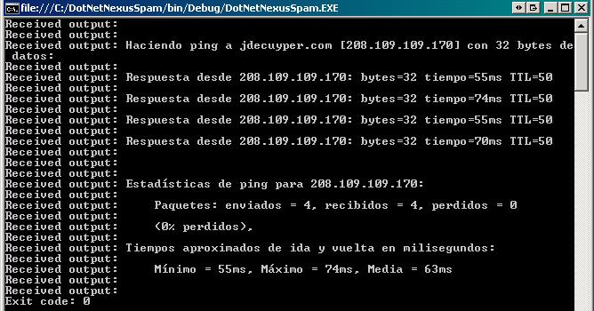

August 17, 2010
Recently, I encountered some difficulties trying to read the return value from an executable file. I'm was attempting to call SpamAssassin from within a C# console application and couldn't retrieve it's return value. Since the exit code indicates whether an email is spam or ham, I had to find a way to receive that value. After struggling a bit, I found out that instead of calling directly SpamAssassin, I had first to call cmd.exe and handle it, as an argument, the path to the SpamAssassin executable. The code ended as following:
Process p = new Process();
p.StartInfo.RedirectStandardOutput = true;
p.StartInfo.UseShellExecute = false;
p.StartInfo.Arguments = @" /C C:\spamassassin.exe -e -L < C:\SPAM_TEST.MAI";
p.StartInfo.FileName = @"C:\WINDOWS\System32\cmd.exe";
p.OutputDataReceived += (sender, arguments) => Console.WriteLine("Received output: {0}", arguments.Data);
p.Start();
p.BeginOutputReadLine();
p.WaitForExit();
Console.WriteLine("Exit code: " + p.ExitCode);
p.Close();
Here is a screenshot of the console after calling cmd.exe with a ping command:
